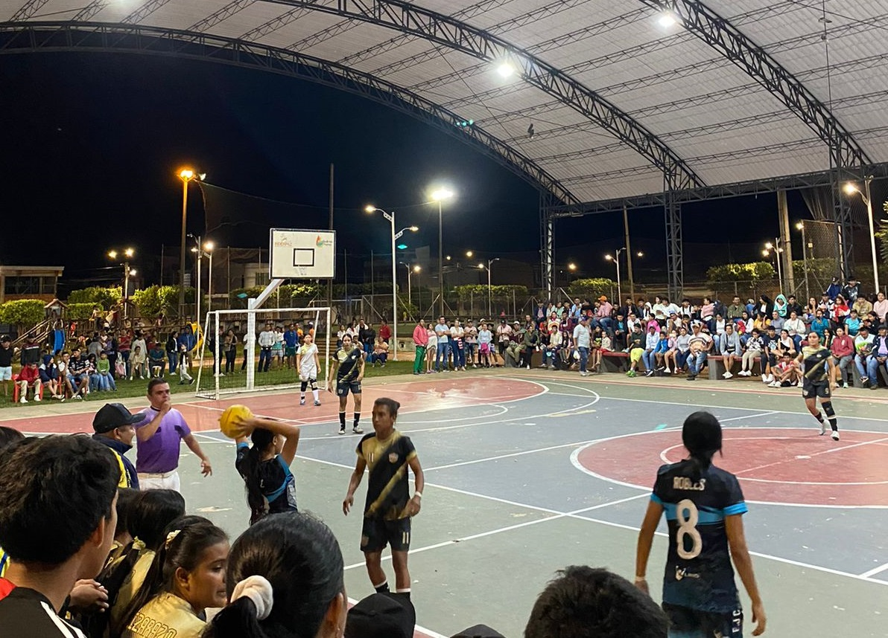
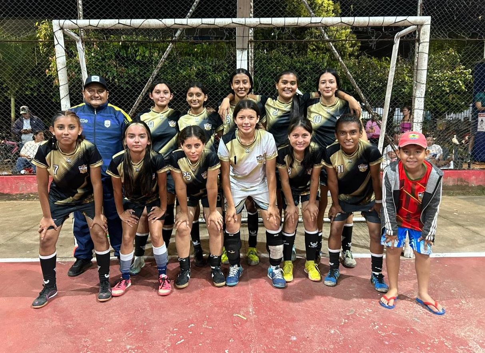
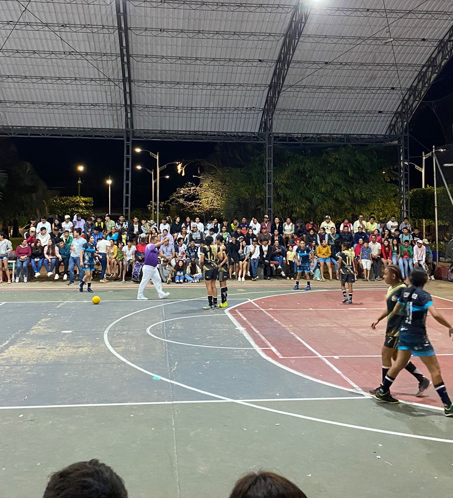

Del 11 al 13 de septiembre del año 2024, se llevaron a cabo los Juegos Intercolegiados 2024 en el Instituto Técnico Industrial El Palmar, un evento que reunió a estudiantes de diversos colegios para competir en una gran variedad de deportes. Durante tres días, jóvenes atletas demostraron su talento y dedicación en disciplinas como fútbol, baloncesto, voleibol, atletismo, entre otras.
Intercolegiados 2024


Cada colegio participó en la mayoría de los deportes, mostrando un alto nivel de competencia y espíritu deportivo. Los primeros dos días estuvieron marcados por emocionantes enfrentamientos en las diferentes disciplinas, donde los equipos buscaron clasificar para la fase final. El 13 de septiembre, se disputaron las semifinales y finales de los deportes más destacados. El ambiente fue de gran expectativa, con los equipos compitiendo por los primeros lugares en sus respectivas categorías. Al final del día, se premiaron a los campeones, destacando el esfuerzo y el compañerismo demostrado por todos los participantes.

Los Juegos Intercolegiados 2024 no solo fomentaron el deporte y la sana competencia, sino que también fortalecieron los lazos entre las instituciones educativas de la región, dejando claro que el deporte es una herramienta poderosa para unir a los jóvenes.